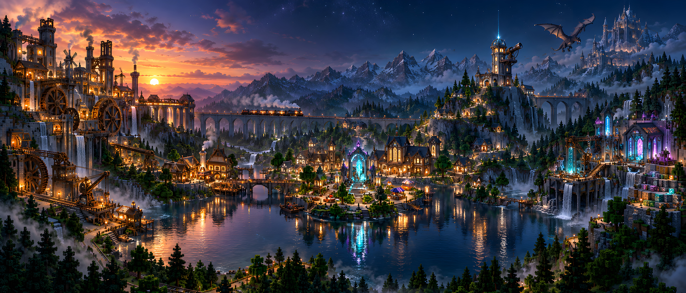

Modpack & ressources Usine Create · packs, shaders et ressources Guide d'installation Atelier de préparation · installer et configurer Infos & règles Place centrale · règles, FAQ et informations serveur Carte du serveur Observatoire · explorer le monde en ligne Communauté Hall social · rejoindre le Discord Galerie BuildAI Atelier de plans · prévisualiser et télécharger les .schem Minecraft Texture Studio Laboratoire créatif · viewer 3D et génération HD
Serveur Minecraft moddé · 1.21.1
Choisis un lieu et voyage dans le monde
Create, Waystones, exploration, shaders et outils créatifs réunis dans une seule scène.
Monde interactif
Survole un lieu pour le découvrir · clique pour t’y rendre